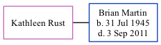

Kathleen Rust, the wife of Brian Philip Martin (the third cousin on the father's side of Nigel Horne), and married Brian in Barking, Essex, England around May 19671.
Citations
England & Wales Marriages 1837-2005 - Findmypast
Family Tree

Generated by ged2site. Last updated on Nov 13, 2024